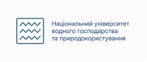

Перевірка на плагіат онлайн
Вставте текст або завантажте документ. PlagiarismSearch знаходить текстові збіги з доступними джерелами та показує їх у звіті, щоб ви могли перевірити контекст і за потреби доопрацювати текст.
До 150 слів без реєстрації · 300 слів щодня для зареєстрованих користувачів
Дивіться не лише відсоток — перевіряйте збіги та джерела
Звіт пов’язує знайдені фрагменти з відповідними джерелами, щоб ви могли побачити, де саме виникла схожість і перевірити її в контексті.
- Фрагмент
- Джерело
- Контекст
Climate change and the economics of food
The economic implications of climate change extend beyond environmental damage and touch every part of modern agricultural systems.
Recent studies have shown that rising global temperatures correlate with decreased yields in rain-fed regions, and that the effect compounds where irrigation is unavailable.
However, smallholder farmers in West Africa have adapted through diversified cropping patterns and drought-resistant millet varieties.
What the models leave out
Most projections treat adaptation as a fixed parameter rather than a decision made season by season under uncertainty.
Field data from recent seasons supports this reading across tropical zones, though the sample remains too small to generalise from with confidence.
Further work should separate the price effect from the yield effect before either is used to guide policy.
Report information
Plagiarism
Total AI rate
AI probability
- Climate volatility and agriculture vulnerability nature.com/nclimate/vol-13 31.6%
- Adaptation strategies in West African smallholding cambridge.org/agricultural-economics 6.6%
- Rain-fed yield variance under warming scenarios sciencedirect.com/agsy/2024 4.1%
- Millet cultivars and drought tolerance trials fao.org/publications/cb9241 2.8%
- Smallholder decision-making under uncertainty jstor.org/stable/48729103 1.9%
- Price transmission in West African grain markets ifpri.org/publication/gm-2023 1.2%
Відкрийте конкретний збіг, перегляньте джерело й порівняйте фрагменти. Залежно від контексту текст може потребувати цитування, посилання, перефразування або взагалі не вимагати змін.
Знайдений текстовий збіг сам по собі не означає плагіат. PlagiarismSearch показує збіги та джерела для перевірки; остаточна оцінка залежить від контексту та правил, які застосовуються до вашого тексту.
PlagiarismSearch користуються студенти з університетів по всій Україні
Серед користувачів сервісу є студенти цих та інших українських закладів вищої освіти.

Логотипи наведені для ідентифікації закладів, студенти яких користувалися PlagiarismSearch. Це не означає партнерство, офіційне схвалення або інституційну співпрацю з цими університетами.
Перевіряйте текст із потрібними джерелами та налаштуваннями
Залежно від доступних у вашому акаунті налаштувань перевірка може включати вебджерела, академічну базу та ваші сховища. Перед запуском можна керувати окремими параметрами аналізу.
- Вебджерела
- Шукайте схожі фрагменти серед доступних вебджерел.
- Академічна база
- Академічна база PlagiarismSearch містить понад 500 млн проіндексованих текстів. Доступність цього джерела залежить від налаштувань перевірки.
- Ваші сховища
- За наявності відповідного доступу можна виконувати пошук у персональному або організаційному сховищі.
- Цитати та список джерел
- Налаштування дозволяють окремо керувати виключенням списку літератури та внутрішньотекстових цитат.
Як правильно оцінити знайдений збіг
Один загальний показник не пояснює, чому система позначила конкретний фрагмент. Переглядайте результат на рівні тексту й джерела.
-
1
Відкрийте збіг
Подивіться, який саме фрагмент вашого тексту має відповідність у знайденому джерелі.
-
2
Перевірте джерело й контекст
Порівняйте формулювання та переконайтеся, чи є це цитатою, коректно оформленим запозиченням, загальним формулюванням або фрагментом, що потребує уваги.
-
3
Вирішіть, чи потрібна зміна
За потреби додайте посилання, уточніть цитату або перепишіть фрагмент власними словами, зберігаючи коректну атрибуцію джерела.
PlagiarismSearch не виносить автоматичний академічний чи юридичний висновок про плагіат. Звіт надає дані для перевірки й рішення людиною.
Що відбувається з документом після перевірки
Перевірка, звіт і функція Storage — це різні етапи. Важливо не змішувати їх в одну дію.
-
01
Обробка
Завантажений текст використовується для виконання запущеної вами перевірки.
-
02
Вихідний документ
Вихідний документ не зберігається як окремий документ після звичайної перевірки. Зберігання результату не означає автоматичне додавання документа до бази для майбутніх порівнянь.
-
03
Звіт
Згенеровані звіти можуть зберігатися у вашому акаунті для повторного перегляду. Користувач може видалити звіт зі свого акаунта.
-
04
Storage
Додавання документа до персонального або організаційного сховища відбувається окремо, коли користувач сам використовує відповідну функцію.
Перевірте невеликий фрагмент без оплати
Без реєстрації можна перевірити до 150 слів. Зареєстрованим користувачам доступно 300 слів для перевірки на плагіат щодня. Якщо потрібно перевіряти більші тексти або більше документів, перегляньте актуальні тарифні плани.
150
слів
без реєстрації
300
слів щодня
зареєстрованим користувачам
Відгуки користувачів PlagiarismSearch
Best plagiarism-checker around. User-friendly and ticks all the boxes for me as a writer.
One of the biggest advantages of this plagiarism checker is its ability to analyze documents in different formats. This flexibility has saved me countless hours of converting files or dealing with compatibility issues…
It is a modern multifunctional tool that I use not only to check for plagiarism in various written works, but also to identify the generated content.
Перевірка на плагіат і AI-детектор — це різні перевірки
Перевірка на плагіат шукає текстові збіги з джерелами. AI-детектор окремо оцінює ознаки машинно згенерованого тексту. Результат одного аналізу не замінює результат іншого.
Поширені запитання
Без реєстрації можна перевірити до 150 слів. Для зареєстрованих користувачів доступно 300 слів для перевірки на плагіат щодня. Для більших обсягів можна скористатися платним тарифом.
Звіт показує знайдені текстові збіги, відповідні джерела та пов’язані з ними фрагменти документа. Ви можете перейти від позначеного тексту до джерела й самостійно перевірити контекст.
Ні. Текстовий збіг сам по собі не є автоматичним висновком про плагіат. Важливо перевірити джерело, контекст, цитування й правила, за якими оцінюється конкретний текст.
Так, PlagiarismSearch може аналізувати PDF, якщо файл містить машинозчитуваний текстовий шар. Сервіс не виконує OCR: текст, який існує лише всередині сканованого зображення, не буде розпізнано. У змішаному PDF аналізується текст із тих сторінок, де він доступний як текст.
Для гостей максимальний розмір підтримуваного файла становить 2 МБ, для користувачів, які увійшли в акаунт, — 24 МБ. За одну операцію можна додати до 10 файлів.
Залежно від доступних налаштувань перевірка може використовувати вебджерела, академічну базу, а також персональне чи організаційне сховище. Не всі джерела обов’язково використовуються в кожній перевірці.
Завантажений вихідний документ не зберігається як окремий документ після звичайної перевірки. Згенерований звіт може залишатися у вашому акаунті для повторного перегляду, і його можна видалити. Додавання документа до Storage є окремою керованою дією.
Вимоги різних університетів відрізняються. Звіт PlagiarismSearch можна використовувати для самоперевірки й роботи зі знайденими збігами, але чи приймає конкретний заклад такий звіт як офіційний документ, потрібно уточнювати безпосередньо в університеті.
Перевірка на плагіат шукає схожість між вашим текстом і доступними джерелами. AI-детектор оцінює інші ознаки — наскільки текст схожий на машинно згенерований. Це різні сигнали, і один не підтверджує інший.
Перевірте текст і перегляньте знайдені джерела
Почніть із безкоштовного ліміту або увійдіть в акаунт, щоб скористатися доступним вам обсягом перевірки.